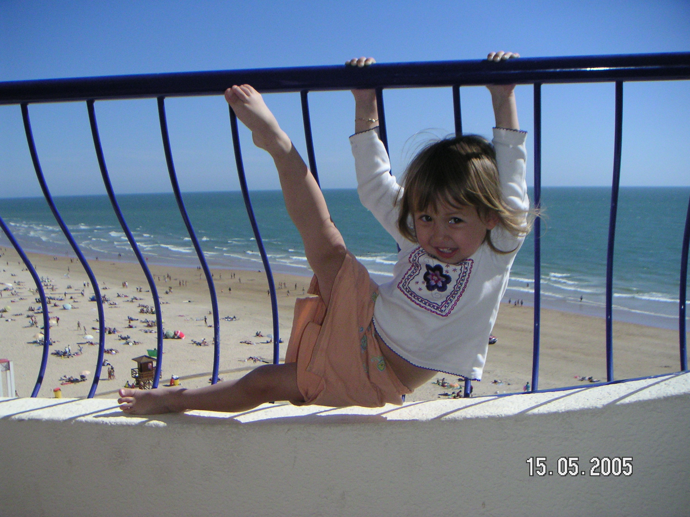

The ocean is the body of salt water that covers approximately 70.8% of the surface of Earth and contains 97% of Earth's water.There is only one global ocean. Historically, there are four named oceans: the Atlantic Ocean, Pacific, Indian, and Arctic. However, most countries now recognize the Southern (Antarctic) as the fifth ocean.
My Ocean

From a young age, I've always been obsessed with being in and near the ocean, it's a beautiful fascinating part of nature. I most enjoy entering an entirely new underwater world and seeing the beautiful landscapes and wildlife that are different from the world above.
In my time, i've gotten 2 open-water diving licenses, and have jumped at any opportunity to bear near the ocean, even just for a short time.
I hope that in the future, and future generations get to have the same experiences that I have, being out in the open water, seeing fascinating animals and just walk by the beautiful beaches.
To think that in the future, possibly even my future, the ocean may have completely changed with regards to temperature, wildlife and trash in the water, is extremely disheartening.
Underwater Wonders
Scuba diving is one of the most unique activities you can do by the ocean, though many people are afraid since they are concerned for their safety, or generally just don't like being deep underwater.
I started scuba diving at age 11, and find the underwater views fascinating. The beatiful corals, animals, and fish habitats.The most gorgeous underwater landscape I have seen, was in the Philipines, where there was an underwater coral cliff, where a huge bed of corals dropped off into the deep.
Corals are huge, multicoloured and has various bewildering wildlife scattered throughout. However, with the rising ocean temperatures from global warming, the corals begin to bleach and die.
As time has gone on, more and more of the corals I encouter area greyish white or even brown, there is little wildlife living around it, it almost looks like the beauty of the ocean is slowly rotting away.
Changing Temperatures
Over time, I myself have even been able to feel the changing temperatures of ocean waters. When I first began diving, we always needed to wear full-body insulating suits since it was quite cold underwater.
In more recent times, it has become much more common to go diving with just half-body insulated diving suits, since the water has warmed up enough for it not to be cold anymore.
In warmer areas that are sinking extremely fast, such as Fiji, wearing an insulated suit feels almost too hot aleady. In area's like Fiji the water is rising high enough that during King Tide, people must get off the beaches since it will be completely flooded.
It is clear the the effects of global warming on the oceans are no longer just visible to scientists, but also to any regular person.